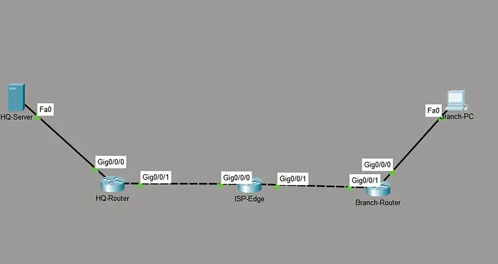
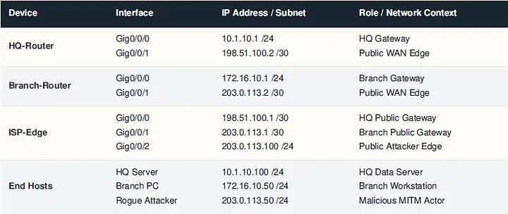

SOP: Site-to-Site IPsec VPN (Cisco Packet Tracer)
Router>, Router#, HQ-Router(config)#, HQ-Router(config-if)#, etc.) so you can see which mode you’re in. The prompt is coloured green in the blocks. When pasting into a real terminal, strip the prompt prefix from each line.1. Purpose
Establish an IKEv1 IPsec site-to-site VPN between HQ and Branch across an untrusted ISP. Demonstrate that a rogue host attached to the public WAN cannot read tunneled traffic. Produce a working, repeatable config that can be adapted to real ISR hardware.
2. Scope
In scope:
- IKE Phase 1 (ISAKMP) policy and pre-shared key authentication
- IKE Phase 2 (IPsec ESP) transform set, crypto map, interesting-traffic ACL
- End-to-end verification with
show cryptocommands - Eavesdropping demonstration from a WAN-attached rogue PC
Out of scope:
- IKEv2 / FlexVPN
- Certificate-based peer authentication
- Dynamic VTI, GRE over IPsec, DMVPN
- NAT traversal (NAT-T)
- Routing protocol inside the tunnel
3. Prerequisites
Knowledge:
- Cisco IOS CLI, config modes, saving and reverting
- Extended ACL syntax (wildcard masks)
- Difference between control plane (ISAKMP) and data plane (ESP)
- Basic symmetric vs asymmetric crypto, Diffie-Hellman purpose
Lab:
- Packet Tracer 8.2 or later
- Four Cisco routers (HQ, ISP-Edge, Branch, plus the attacker runs on a PC not a router)
- One server on HQ LAN, one PC on Branch LAN, one PC on the ISP public segment acting as attacker
4. Topology and addressing


Same addressing in plain text for quick copy-paste reference:
| Device | Interface | IP / Mask | Role |
|---|---|---|---|
| HQ-Router | Gig0/0/0 | 10.1.10.1 /24 | HQ gateway |
| HQ-Router | Gig0/0/1 | 198.51.100.2 /30 | Public WAN edge |
| ISP-Edge | Gig0/0/0 | 198.51.100.1 /30 | HQ public gateway |
| ISP-Edge | Gig0/0/1 | 203.0.113.1 /30 | Branch public gateway |
| ISP-Edge | Gig0/0/2 | 203.0.113.100 /24 | Attacker edge |
| Branch-Router | Gig0/0/0 | 172.16.10.1 /24 | Branch gateway |
| Branch-Router | Gig0/0/1 | 203.0.113.2 /30 | Public WAN edge |
| HQ-Server | NIC | 10.1.10.100 /24 | HQ data server |
| Branch-PC | NIC | 172.16.10.50 /24 | Branch workstation |
| Rogue Attacker | NIC | 203.0.113.50 /24 | MITM demo host |
203.0.113.0/30 (Branch WAN) overlaps the 203.0.113.0/24 attacker segment. Longest-prefix match on ISP-Edge keeps routing correct. If your version of Packet Tracer complains, change the attacker segment to 203.0.113.128/25.
5. Procedure
Perform the steps in order. Save after each major step with copy running-config startup-config.
Step 1: Base interface configuration
HQ-Router:
Router> enable
Router# configure terminal
Router(config)# hostname HQ-Router
HQ-Router(config)# interface GigabitEthernet0/0/0
HQ-Router(config-if)# description LAN to HQ-Server
HQ-Router(config-if)# ip address 10.1.10.1 255.255.255.0
HQ-Router(config-if)# no shutdown
HQ-Router(config-if)# exit
HQ-Router(config)# interface GigabitEthernet0/0/1
HQ-Router(config-if)# description WAN to ISP-Edge
HQ-Router(config-if)# ip address 198.51.100.2 255.255.255.252
HQ-Router(config-if)# no shutdown
HQ-Router(config-if)# exit
HQ-Router(config)# ip route 0.0.0.0 0.0.0.0 198.51.100.1
HQ-Router(config)# end
HQ-Router# copy running-config startup-configBranch-Router:
Router> enable
Router# configure terminal
Router(config)# hostname Branch-Router
Branch-Router(config)# interface GigabitEthernet0/0/0
Branch-Router(config-if)# description LAN to Branch-PC
Branch-Router(config-if)# ip address 172.16.10.1 255.255.255.0
Branch-Router(config-if)# no shutdown
Branch-Router(config-if)# exit
Branch-Router(config)# interface GigabitEthernet0/0/1
Branch-Router(config-if)# description WAN to ISP-Edge
Branch-Router(config-if)# ip address 203.0.113.2 255.255.255.252
Branch-Router(config-if)# no shutdown
Branch-Router(config-if)# exit
Branch-Router(config)# ip route 0.0.0.0 0.0.0.0 203.0.113.1
Branch-Router(config)# end
Branch-Router# copy running-config startup-configISP-Edge (missing from most tutorials; the WAN link does not work without it):
Router> enable
Router# configure terminal
Router(config)# hostname ISP-Edge
ISP-Edge(config)# interface GigabitEthernet0/0/0
ISP-Edge(config-if)# description Link to HQ-Router
ISP-Edge(config-if)# ip address 198.51.100.1 255.255.255.252
ISP-Edge(config-if)# no shutdown
ISP-Edge(config-if)# exit
ISP-Edge(config)# interface GigabitEthernet0/0/1
ISP-Edge(config-if)# description Link to Branch-Router
ISP-Edge(config-if)# ip address 203.0.113.1 255.255.255.252
ISP-Edge(config-if)# no shutdown
ISP-Edge(config-if)# exit
ISP-Edge(config)# interface GigabitEthernet0/0/2
ISP-Edge(config-if)# description Public segment with attacker host
ISP-Edge(config-if)# ip address 203.0.113.100 255.255.255.0
ISP-Edge(config-if)# no shutdown
ISP-Edge(config-if)# exit
ISP-Edge(config)# end
ISP-Edge# copy running-config startup-configVerify Layer 3 before continuing:
HQ-Router# ping 198.51.100.1
Branch-Router# ping 203.0.113.1
HQ-Router# ping 203.0.113.2All three must succeed. End hosts cannot ping each other yet (private subnets have no public route on ISP-Edge). This is expected and will be solved by the IPsec tunnel in later steps.
Step 2: IKE Phase 1 (ISAKMP control-plane tunnel)
HQ-Router:
HQ-Router# configure terminal
HQ-Router(config)# crypto isakmp policy 10
HQ-Router(config-isakmp)# encryption aes 256
HQ-Router(config-isakmp)# hash sha
HQ-Router(config-isakmp)# authentication pre-share
HQ-Router(config-isakmp)# group 5
HQ-Router(config-isakmp)# lifetime 86400
HQ-Router(config-isakmp)# exit
HQ-Router(config)# crypto isakmp key SecretKey123 address 203.0.113.2
HQ-Router(config)# endBranch-Router (policy numbers and parameters MUST match or Phase 1 fails):
Branch-Router# configure terminal
Branch-Router(config)# crypto isakmp policy 10
Branch-Router(config-isakmp)# encryption aes 256
Branch-Router(config-isakmp)# hash sha
Branch-Router(config-isakmp)# authentication pre-share
Branch-Router(config-isakmp)# group 5
Branch-Router(config-isakmp)# lifetime 86400
Branch-Router(config-isakmp)# exit
Branch-Router(config)# crypto isakmp key SecretKey123 address 198.51.100.2
Branch-Router(config)# endParameter cheat sheet:
| Setting | Value here | Why |
|---|---|---|
| encryption | AES-256 | Strong symmetric cipher for the Phase 1 tunnel |
| hash | SHA-1 | Lab convenience. Production should use SHA-256 or higher. |
| authentication | pre-share | Simplest for lab. Production should use certificates. |
| DH group | 5 (1536 bit) | Legacy. Production should use group 14 (2048) or group 19/21 (ECC). |
| lifetime | 86400 s (24 h) | Standard default |
| PSK | SecretKey123 | Weak. Lab only. Rotate and store securely in production. |
Step 3: Interesting-traffic ACL
Define which traffic triggers the tunnel. The two ACLs must mirror each other.
HQ-Router:
HQ-Router# configure terminal
HQ-Router(config)# access-list 100 permit ip 10.1.10.0 0.0.0.255 172.16.10.0 0.0.0.255
HQ-Router(config)# endBranch-Router:
Branch-Router# configure terminal
Branch-Router(config)# access-list 100 permit ip 172.16.10.0 0.0.0.255 10.1.10.0 0.0.0.255
Branch-Router(config)# endStep 4: IKE Phase 2 (IPsec data-plane tunnel)
Both routers must use the SAME transform-set algorithms. Pick one combo and stick with it on both ends.
HQ-Router:
HQ-Router# configure terminal
HQ-Router(config)# crypto ipsec transform-set TS-SET esp-aes 256 esp-sha-hmac
HQ-Router(cfg-crypto-trans)# exit
HQ-Router(config)# crypto map VPN-MAP 10 ipsec-isakmp
HQ-Router(config-crypto-map)# set peer 203.0.113.2
HQ-Router(config-crypto-map)# set transform-set TS-SET
HQ-Router(config-crypto-map)# match address 100
HQ-Router(config-crypto-map)# exit
HQ-Router(config)# interface GigabitEthernet0/0/1
HQ-Router(config-if)# crypto map VPN-MAP
HQ-Router(config-if)# exit
HQ-Router(config)# endBranch-Router:
Branch-Router# configure terminal
Branch-Router(config)# crypto ipsec transform-set TS-SET esp-aes 256 esp-sha-hmac
Branch-Router(cfg-crypto-trans)# exit
Branch-Router(config)# crypto map VPN-MAP 10 ipsec-isakmp
Branch-Router(config-crypto-map)# set peer 198.51.100.2
Branch-Router(config-crypto-map)# set transform-set TS-SET
Branch-Router(config-crypto-map)# match address 100
Branch-Router(config-crypto-map)# exit
Branch-Router(config)# interface GigabitEthernet0/0/1
Branch-Router(config-if)# crypto map VPN-MAP
Branch-Router(config-if)# exit
Branch-Router(config)# end%CRYPTO-6-ISAKMP_ON_OFF: ISAKMP is ON right after crypto map is applied. If you do not, re-check that the map name is spelled identically on both routers.
Step 5: Trigger the tunnel and verify
The tunnel is dormant until interesting traffic arrives. From Branch-PC command prompt:
C:\> ping 10.1.10.100First one or two ICMP replies will time out (SAs are being negotiated). Subsequent pings should return.
Validate Phase 1 on either router:
HQ-Router# show crypto isakmp saExpected: a line with QM_IDLE state and the two peer IPs. QM_IDLE means Phase 1 is up and resting.
Validate Phase 2:
HQ-Router# show crypto ipsec saExpected (fragments shown):
#pkts encaps: N, #pkts encrypt: N, #pkts digest: N
#pkts decaps: N, #pkts decrypt: N, #pkts verify: NBoth counters increase as traffic flows. encaps/encrypt matching on one side and decaps/decrypt matching on the other confirms end-to-end ESP.
6. Validation checklist
- All three routers show interfaces up/up with the correct IPs
- Routers can ping each other across the public WAN
- Private LAN hosts cannot reach each other BEFORE Step 4
- After Step 4, Branch-PC can ping HQ-Server (first attempt may fail)
show crypto isakmp sareportsQM_IDLEshow crypto ipsec saencrypt and decrypt counters are increasing- Configs saved on all three routers with
copy running-config startup-config
7. Attack demonstration (rogue host on WAN)
Goal: prove that an attacker on the public segment cannot read tunneled traffic even though they see the packets.
- Place a PC on ISP-Edge Gig0/0/2 with IP
203.0.113.50 /24, gateway203.0.113.100. - Switch Packet Tracer to Simulation Mode. Filter for ICMP, IP, and ESP.
- From Branch-PC, ping HQ-Server.
- Click a captured packet on the ISP-Edge-to-HQ link. Expand the IP header.
- Expected observations:
- Outer IP header: source
203.0.113.2, destination198.51.100.2(the ROUTER public IPs, not the LAN hosts). - Protocol: 50 (ESP). Not ICMP.
- Payload: opaque ESP data. The ICMP echo, LAN source
172.16.10.50, and LAN destination10.1.10.100are NOT visible.
- Outer IP header: source
- Contrast: remove the crypto map from one interface, re-run the ping, inspect again. The LAN source/destination and the ICMP contents are now visible in cleartext.
- Re-apply the crypto map before continuing.
Takeaway: ESP hides both the payload AND the real LAN addresses behind the two public router IPs. The attacker learns only that encrypted traffic flows between the two WAN endpoints.
8. Hardening checklist (production delta)
| Weakness in this lab | Production replacement |
|---|---|
| SHA-1 hash | SHA-256 or SHA-384 |
| DH group 5 (1536-bit) | DH group 14 (2048-bit), group 19 (ECC P-256), or group 21 (ECC P-521) |
| IKEv1 | IKEv2 |
| Pre-shared key | Certificate-based peer authentication |
Static weak PSK SecretKey123 | Rotated high-entropy PSK stored in a secret manager; or move to certs |
| No PFS | set pfs group14 under the crypto map |
| No dead peer detection | crypto isakmp keepalive 10 periodic |
| CLI accessible from WAN | Restrict VTY to management SVI with ACL + SSH only |
| No logging | logging host, logging trap informational to a central syslog |
9. Common failure modes
| Symptom | Likely cause | Fix |
|---|---|---|
show crypto isakmp sa shows MM_NO_STATE or nothing | Phase 1 policy mismatch (encryption, hash, DH group) | Verify both routers use identical crypto isakmp policy 10 parameters |
show crypto isakmp sa cycles through states | PSK mismatch or wrong peer IP | Check crypto isakmp key ... address ... on both sides |
| Phase 1 up, Phase 2 never forms | Transform-set algorithms differ, or ACLs are not mirror images | Match transform-set exactly; invert source/destination in ACL 100 |
| Tunnel up but no traffic encrypted | Traffic does not match ACL 100 | Confirm wildcard masks and subnet alignment |
| Everything correct but no reachability | Crypto map not applied to WAN interface | show run interface Gig0/0/1 and confirm crypto map VPN-MAP line |
| Routers reach each other but LAN hosts cannot | Default route missing OR tunnel is not up | Check show ip route and show crypto ipsec sa |
10. Rollback
To cleanly remove the VPN without touching base routing. Apply on both HQ-Router and Branch-Router (adjust the peer IP for each). Base interfaces and default routes remain intact.
HQ-Router# configure terminal
HQ-Router(config)# interface GigabitEthernet0/0/1
HQ-Router(config-if)# no crypto map VPN-MAP
HQ-Router(config-if)# exit
HQ-Router(config)# no crypto map VPN-MAP 10
HQ-Router(config)# no crypto ipsec transform-set TS-SET
HQ-Router(config)# no access-list 100
HQ-Router(config)# no crypto isakmp key SecretKey123 address 203.0.113.2
HQ-Router(config)# no crypto isakmp policy 10
HQ-Router(config)# end
HQ-Router# copy running-config startup-config11. Sources
- Cisco IOS Security Command Reference (chapters:
crypto isakmp policy,crypto ipsec transform-set,crypto map) - Cisco CCNA 200-301 Official Cert Guide, Vol 2 (Odom): VPN concepts chapter
- RFC 2409 (IKEv1), RFC 4301 (IPsec architecture), RFC 4303 (ESP)
- Public lab writeups for the same ISR4331 Packet Tracer scenario; this SOP uses the same Cisco IOS CLI syntax (non-copyrightable) with independent prose, a corrected transform-set, and the ISP-Edge base config that most writeups omit.
End of SOP · Version 1.1 · 2026-10-18